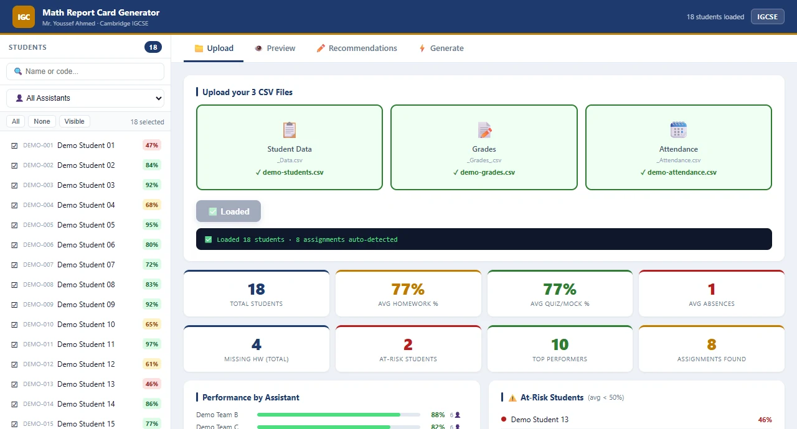
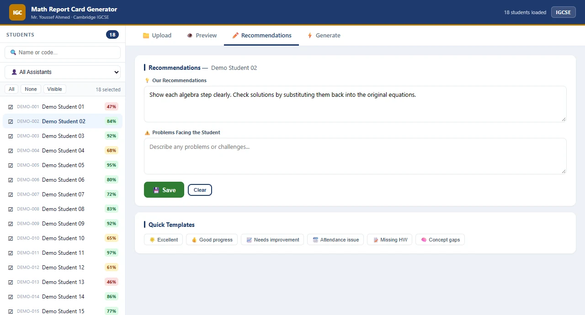

Flask · ReportLab · Railway
Report Card Generator
I built a tool that turns CSV exports into individual maths reports, cutting a three-hour workflow to about 30 seconds for 265 students.




From CSV exports to reports
The interface loads grades and attendance, detects assignments, and lets tutors add recommendations before generating individual reports. Both screenshots use fictional student records.